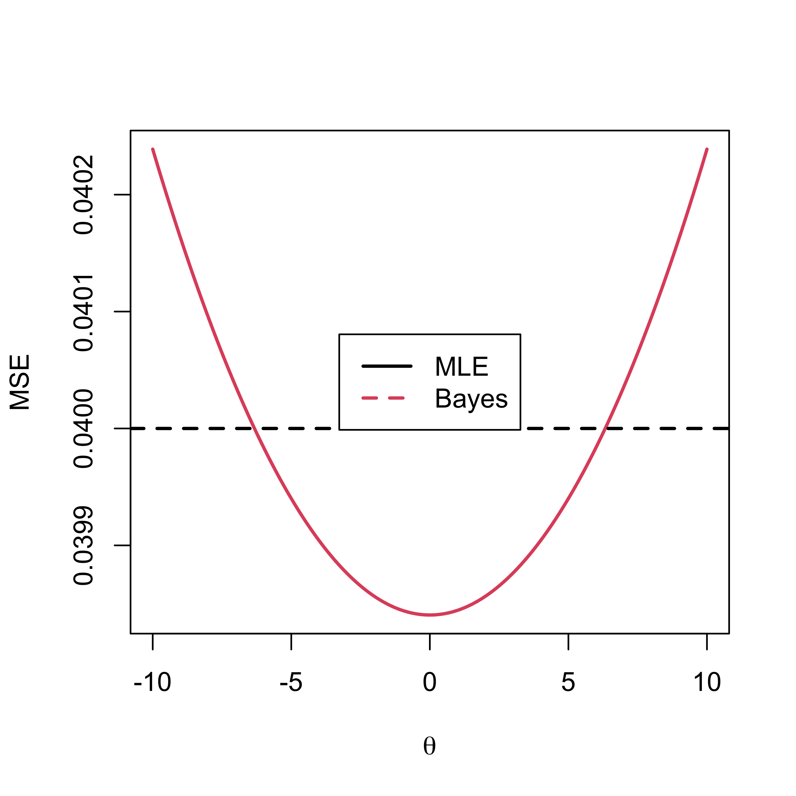
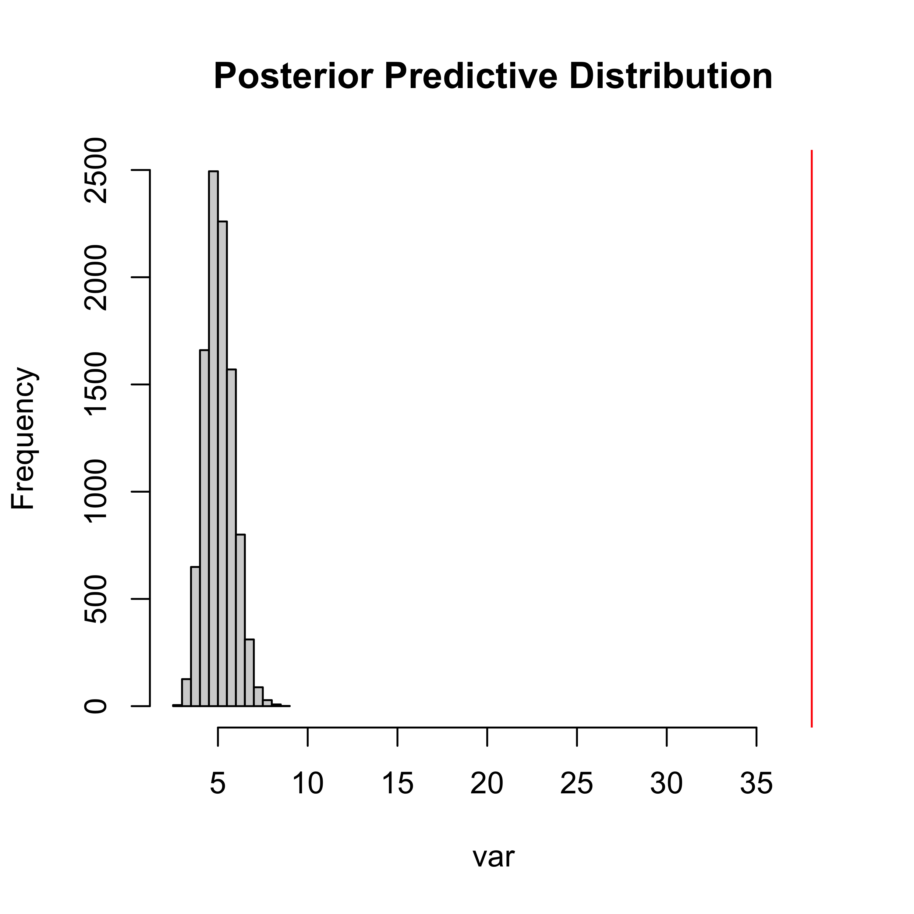
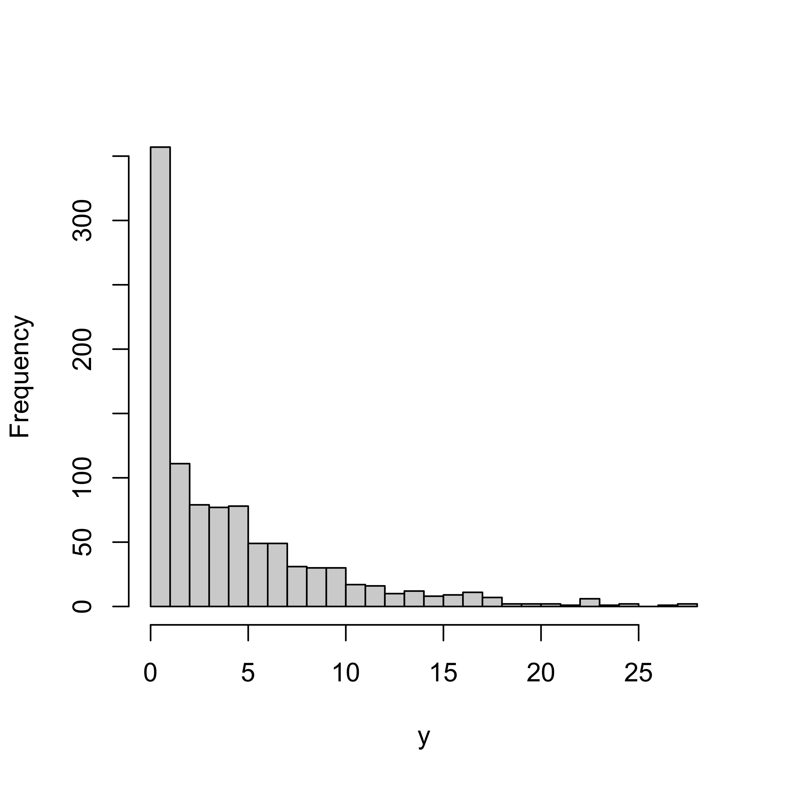
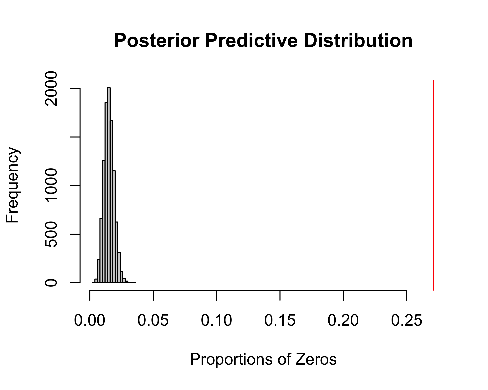

Comparing Estimators & Prior/Posterior Checks
STA 702: Lecture 4
Duke University
Normal Model Setup from Last Class
independent observations \(\mathbf{y} = (y_1,y_2,\ldots,y_n)^T\) where each \(Y_i \mid \theta\stackrel{iid}\sim \textsf{N}(\theta, 1/\tau)\) (iid)
The likelihood for \(\theta\) is proportional to the sampling model
\[\begin{split} \cal{L}(\theta) & \propto \tau^{\frac{n}{2}} \ \exp\left\{-\frac{1}{2} \tau \sum_{i=1}^n (y_i-\theta)^2\right\}\\ & \propto \tau^{\frac{n}{2}} \ \exp\left\{-\frac{1}{2} \tau \sum_{i=1}^n \left[ (y_i-\bar{y}) - (\theta - \bar{y}) \right]^2 \right\}\\ & \propto \tau^{\frac{n}{2}} \ \exp\left\{-\frac{1}{2} \tau \left[ \sum_{i=1}^n (y_i-\bar{y})^2 + \sum_{i=1}^n(\theta - \bar{y})^2 \right] \right\}\\ & \propto \tau^{\frac{n}{2}} \ \exp\left\{-\frac{1}{2} \tau \left[ \sum_{i=1}^n (y_i-\bar{y})^2 + n(\theta - \bar{y})^2 \right] \right\}\\ & \propto \exp\left\{-\frac{1}{2} \tau n(\theta - \bar{y})^2\right\} \end{split}\]
Exercises for Practice
Try this
Use \(\cal{L}(\theta)\) based on \(n\) observations to find \(\pi(\theta \mid y_1, \ldots, y_n)\) based on the sufficient statistics and prior \(\theta \sim \textsf{N}(\theta_0, 1/\tau_0)\)
Use \(\pi(\theta \mid y_1, \ldots, y_n)\) to find the posterior predictive distribution for \(Y_{n+1}\)
After \(n\) observations
Posterior for \(\theta\)
\[\theta \mid y_1, \ldots, y_n \sim \textsf{N}\left( \frac{\tau_0 \theta_0 + n \tau \bar{y}} {\tau_0 + n \tau}, \frac{1}{ \tau_0 + n \tau} \right)\]
Posterior Predictive Distribution for \(Y_{n+1}\)
\[Y_{n+1} \mid y_1, \ldots, y_n \sim \textsf{N}\left( \frac{\tau_0 \theta_0 + n \tau \bar{y}} {\tau_0 + n \tau}, \frac{1}{\tau} + \frac{1}{ \tau_0 + n \tau} \right)\]
- Shrinkage of the MLE to the prior mean
Results with Jeffreys’ Prior
What if \(\tau_0 \to 0\)? (or \(\sigma^2_0 \to \infty\))
Prior predictive \(\textsf{N}(\theta_0, \sigma^2_0 + \sigma^2 )\) (not proper in the limit)
Posterior for \(\theta\) (formal posterior)
\[\theta \mid y_1, \ldots, y_n \sim \textsf{N}\left( \frac{\tau_0 \theta_0 + n \tau \bar{y}} {\tau_0 + n \tau}, \frac{1}{ \tau_0 + n \tau} \right)\]
\[\to \qquad \theta \mid y_1, \ldots, y_n \sim \textsf{N}\left( \bar{y}, \frac{1}{n \tau} \right)\]
Posterior Predictive \(Y_{n+1} \mid y_1, \ldots, y_n \sim \textsf{N}\left( \bar{y}, \sigma^2 (1 + \frac{1}{n} )\right)\)
Comparing Estimators
Expected loss (from frequentist perspective) of using Bayes Estimator
- Posterior mean is optimal under squared error loss (min Bayes Risk) [also absolute error loss]
Compute Mean Square Error (or Expected Average Loss) \[\textsf{E}_{\bar{y} \mid \theta}\left[\left(\hat{\theta} - \theta \right)^2 \mid \theta \right]\] \[ = \textsf{Bias}(\hat{\theta})^2 + \textsf{Var}(\hat{\theta})\]
- For the MLE \(\bar{Y}\) this is just the variance of \(\bar{Y}\) or \(\sigma^2/n\)
MSE for Bayes
\[\textsf{E}_{\bar{y} \mid \theta}\left[\left(\hat{\theta} - \theta \right)^2 \mid \theta \right] = \textsf{MSE} = \textsf{Bias}(\hat{\theta})^2 + \textsf{Var}(\hat{\theta})\]
- Bias of Bayes Estimate
\[\textsf{E}_{\bar{Y} \mid \theta}\left[ \frac{\tau_0 \theta_0 + \tau n \bar{Y}} {\tau_0 + \tau n}\right] - \theta = \frac{\tau_0(\theta_0 - \theta)}{\tau_0 + \tau n}\]
- Variance
\[\textsf{Var}\left(\frac{\tau_0 \theta_0 + \tau n \bar{Y}}{\tau_0 + \tau n} - \theta \mid \theta \right) = \frac{\tau n}{(\tau_0 + \tau n)^2}\]
(Frequentist) expected Loss when truth is \(\theta\)
\[\textsf{MSE} = \frac{\tau_0^2(\theta - \theta_0)^2 + \tau n}{(\tau_0 + \tau n)^2}\]
Behavior ?
Plot
Exercise
Repeat this for estimating a future Y under squared error loss using a proper prior and Jeffreys’ prior
\[\textsf{E}_{Y_{n+1} \mid \theta}\left[(Y_{n+1} - \textsf{E}[Y_{n+1} \mid y_1, \ldots, n])^2]\right]\]
Uses of Posterior Predictive
Plot the entire density or summarize
Available analytically for conjugate families
Monte Carlo Approximation
\[p(y_{n+1} \mid y_1, \ldots y_n) \approx \frac 1 T \sum_{t = 1}^T p(y_{n+t} \mid \theta^{(t)})\]
where \(\theta^{(t)} \sim \pi(\theta \mid y_1, \ldots y_n)\) for \(t = 1, \ldots, T\)
T samples from the posterior distribution
Empirical Estimates & Quantiles from Monte Carlo Samples
Model Diagnostics
Need an accurate specification of likelihood function (and reasonable prior)
George Box: All models are wrong but some are useful
“Useful” \(\rightarrow\) model provides a good approximation; there aren’t clear aspects of the data that are ignored or misspecified
Example
\[Y_i \sim \textsf{Poisson}(\theta) \qquad i = 1, \ldots, n\] How might our model be misspecified?
Poisson assumes that \(\textsf{E}(Y_i) = \textsf{Var}(Y_i) = \theta\)
it’s very common for data to be over-dispersed \(\textsf{E}(Y_i) < \textsf{Var}(Y_i)\)
zero-inflation many more zero values than consistent with the poisson model
Can we use the Posterior Predictive to diagnose whether these are issues with our observed data?
Posterior Predictive (PP) Checks
\(y^{(n)}\) is observed & fixed training data
\(p(y_{n+1} \mid y^{(n)})\) is PP distributoin
\(\tilde{y}^{(n)}_t\) is \(t^{\text{th}}\) new dataset sampled from the PP of size \(n\) (same as training)
\(p(\tilde{y}^{(n)}_t \mid y^{(n)})\) is PP of new data sets
compare some feature of the observed data to the datasets simulated from the PP
Formally
choose a “test statistic” \(t(\cdot)\) that captures some summary of the data, e.g. \(\textsf{Var}(y^{(n)})\) for over-dispersion
\(t(y^{(n)}) \equiv t_{\textrm{obs}}\) value of test statistic in observed data
\(t(\tilde{y}^{(n)}) \equiv t_{\textrm{pred}}\) value of test statistic for a random dataset drawn from the posterior predictive
plot posterior predictive distribution of \(t(\tilde{y}^{(n)})\)
add \(t_{\textrm{obs}}\) to plot
How extreme is \(t_{\textrm{obs}}\) compared to the distribution of \(t(\tilde{y}^{(n)})\)
Example Over Dispersion
Posterior Predictive p-values (PPPs)
p-value is probability of seeing something as extreme or more so under a hypothetical “null” model & are uniformally distributed under the “null” model
PPPs advocated by Gelman & Rubin in papers and BDA are not valid p-values. They are do not have a uniform distribution under the hypothesis that the model is correctly specified
the PPPs tend to be concentrated around 0.5, tends not to reject (conservative)
theoretical reason for the incorrect distribution is due to double use of the data
DO NOT USE as a formal test! use as a diagnostic plot to see how model might fall flat
Better approach is to split the data use one piece to learn \(\theta\) and the other to calculate \(t_{\textrm{obs}}\)
Zero Inflated Distribution
- Let the \(t()\) be the proportion of zeros
\[t(y) = \frac{\sum_{i = 1}^{n}1(y_i = 0)}{n}\]
Posterior Predictive Distribution
Modeling Over-Dispersion
Original Model \(Y_i \mid \theta \sim \textsf{Poisson}(\theta)\)
cause of overdispersion is variation in the rate
\[ Y_i \mid \theta \sim \textsf{Poisson}(\theta_i)\]
\[\theta_i \sim \pi_\theta()\]
\(\pi_\theta()\) characterizes variation in the rate parameter across inviduals
Simple Two Stage Hierarchical Model
Example
\[\theta_i \sim \textsf{Gamma}(\phi \mu, \phi)\]
Find pmf for \(Y_i \mid \mu, \phi\)
Find \(\textsf{E}[Y_i \mid \mu, \phi]\) and \(\textsf{Var}[Y_i \mid \mu, \phi]\)
Homework: \[\theta_i \sim \textsf{Gamma}(\phi, \phi/\mu)\]
Can either of these model zero-inflation?
See Bayarri & Berger (2000) for more discussion about why PPP should not be used as a test